1905
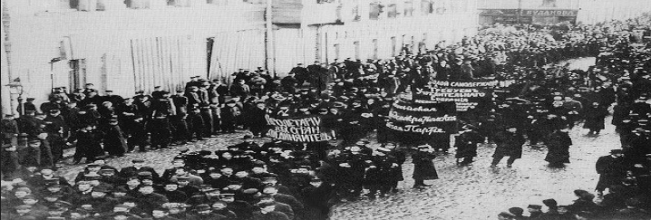
Russian Revolution · 1917
A journey through the revolution that brought an end to centuries of imperial rule and transformed the political landscape of the twentieth century.
Begin the journey →Years of social inequality, political repression, economic hardship, and the devastating effects of World War I created an atmosphere of growing dissatisfaction throughout the Russian Empire.
In 1917, this dissatisfaction erupted into two revolutions that transformed Russia forever.
CAUSES
Russia was deeply divided between a wealthy aristocracy and the majority of the population, who lived in poverty. Most peasants had limited land and struggled to support their families, while industrial workers faced low wages, long working hours, and poor living conditions.
The unequal distribution of wealth created growing resentment toward the imperial system. Workers and peasants increasingly demanded better living conditions, higher wages, land reform, and greater political representation.
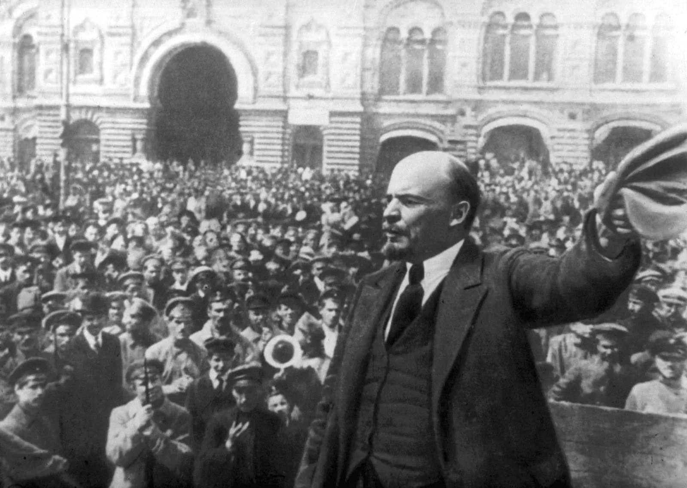
The Russian Empire was ruled by Tsar Nicholas II under an autocratic system. Political opposition was restricted, while censorship limited freedom of expression and criticism of the government.
Political activists and opponents of the government could be arrested, imprisoned, or exiled. As dissatisfaction increased, more people began demanding political reform, civil rights, and a government that represented the population.
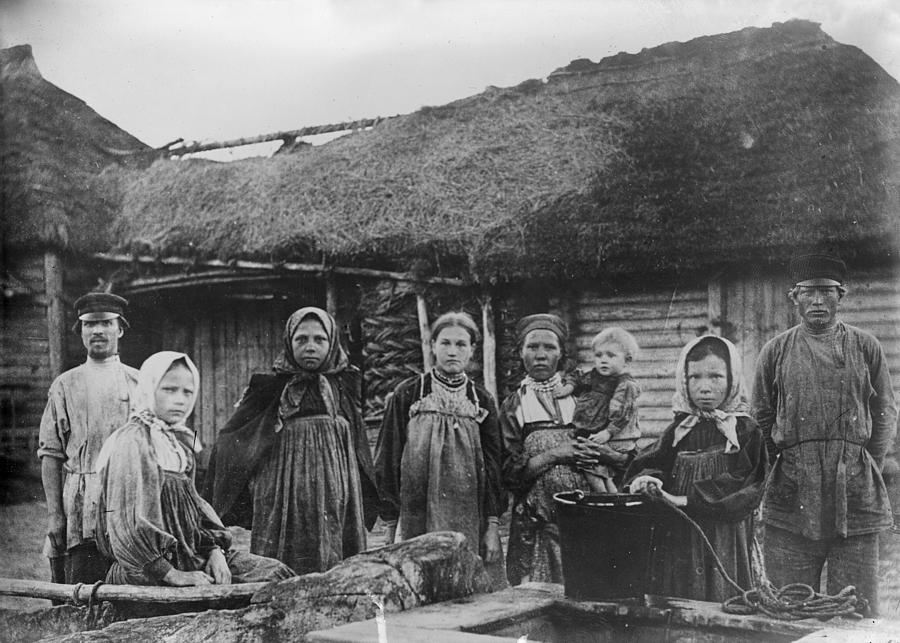
Russia entered World War I in 1914 as part of the Allied Powers. The war placed enormous pressure on the Russian Empire, with millions of soldiers being killed, wounded, or captured.
The military suffered from shortages of weapons, ammunition, food, and other supplies. At home, the war disrupted transportation and production while increasing inflation and shortages. The growing military and economic crisis weakened confidence in the Tsarist government.
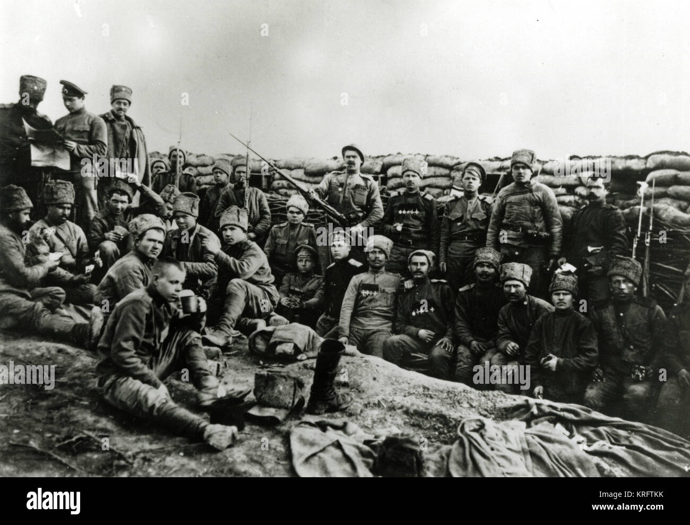
World War I severely disrupted Russia's food production and distribution system. The transportation network was under enormous pressure, making it difficult to move food from rural areas to major cities.
Bread and other basic necessities became increasingly difficult to obtain. Rising prices and long queues for food caused frustration among urban workers and families. These conditions contributed to mass demonstrations in Petrograd in February 1917.
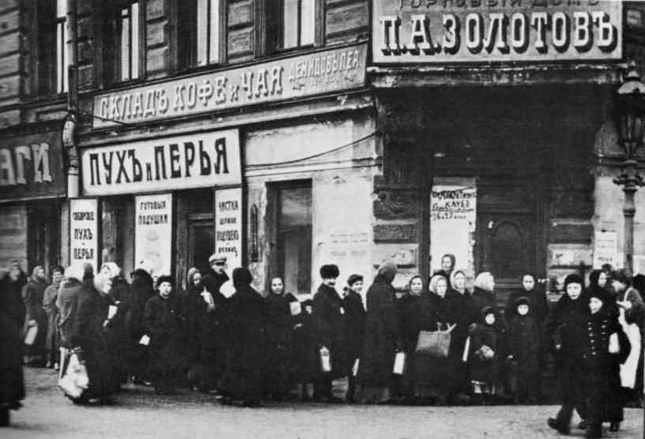
The revolution was shaped by leaders, rulers, revolutionaries, and ordinary citizens.

BOLSHEVIK LEADER
Leader of the Bolshevik Party and a central figure in the October Revolution.
Discover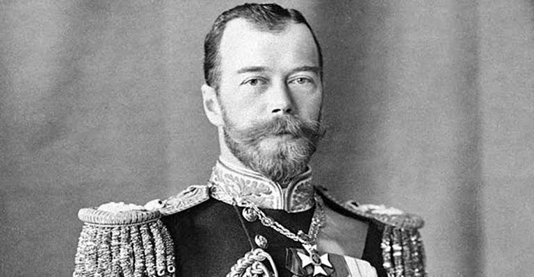
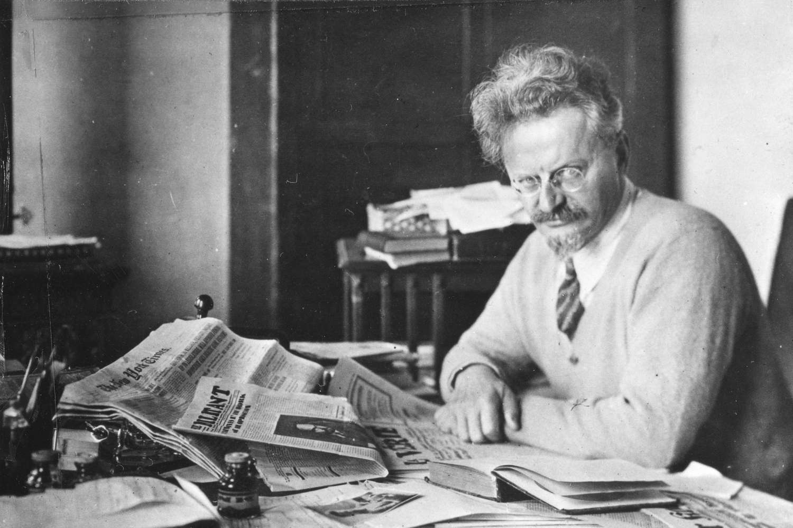
REVOLUTIONARY
Revolutionary leader who played an important role during the revolution and Civil War.
Discover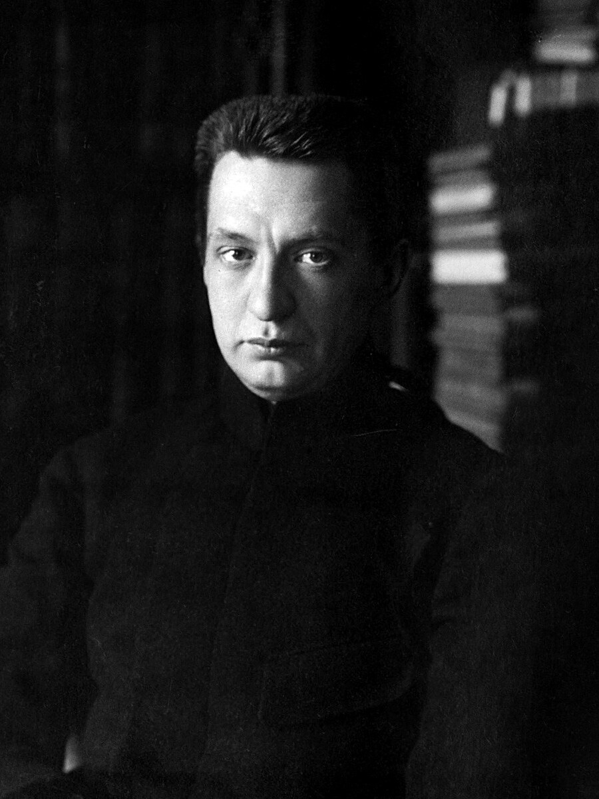
PROVISIONAL GOVERNMENT
A prominent leader of the Provisional Government following the February Revolution.
Discover
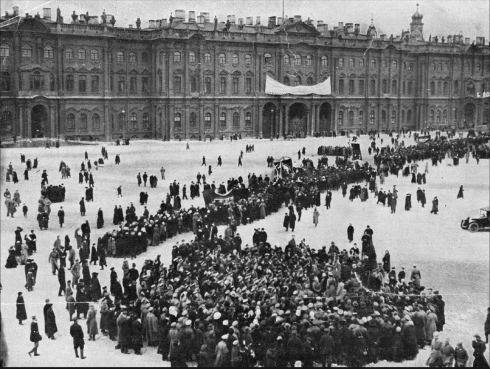
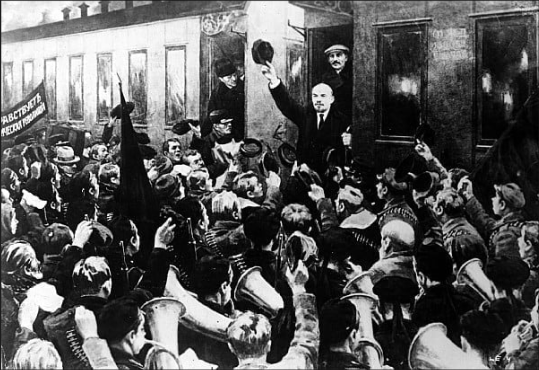
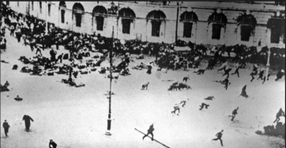
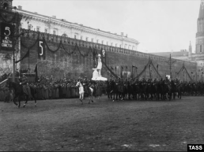

BOLSHEVIK LEADER
Leader of the Bolshevik Party who played a central role in the October Revolution.
REVOLUTIONARY
A major revolutionary figure and important leader of the Bolshevik movement.
LAST TSAR
The final emperor of Russia whose reign ended during the February Revolution.
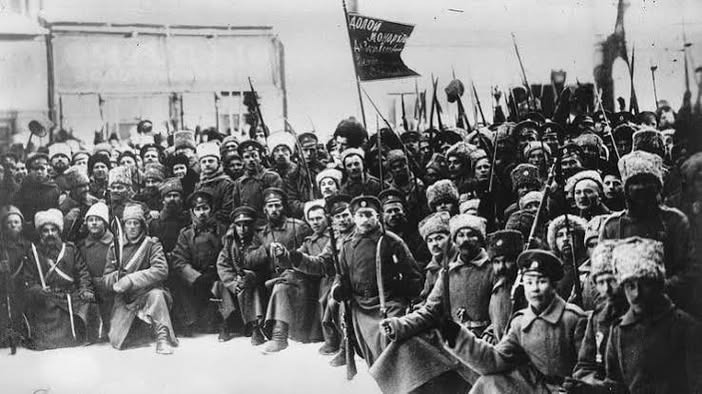
1917
The revolution that brought an end to centuries of Tsarist rule in Russia.
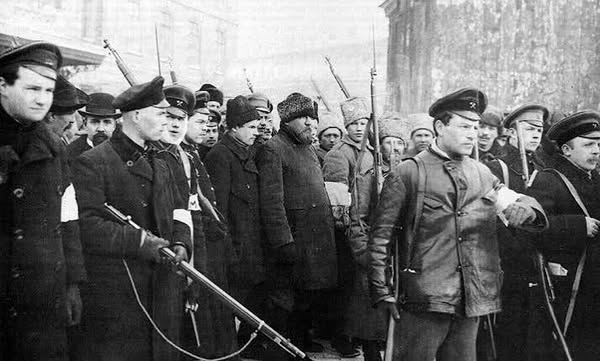
1917
The Bolsheviks seized power and established a new revolutionary government.
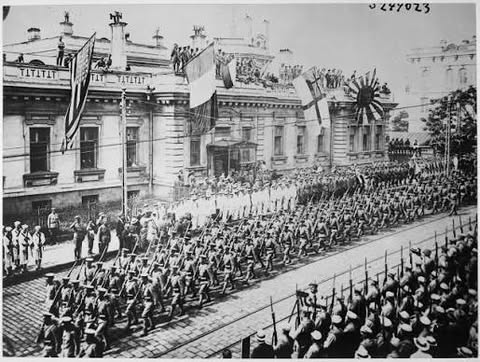
1918–1922
A conflict between the Red Army and forces opposing Bolshevik rule.
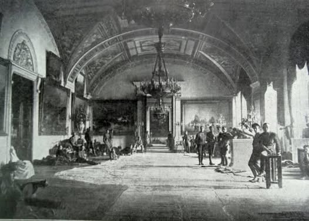
PETROGRAD
The former imperial residence that became a major location during the revolution.
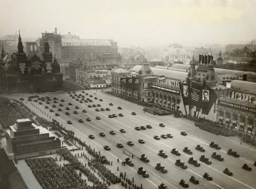
MOSCOW
One of Moscow's most important public spaces and a major symbol of Soviet history.
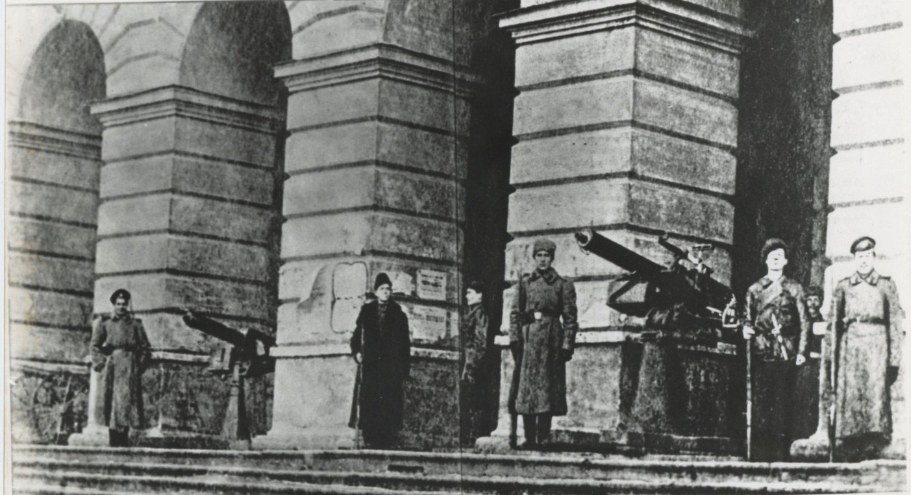
PETROGRAD
A major headquarters of the Bolsheviks during the October Revolution.
The revolution did not simply change who governed Russia.
It altered the political landscape of the entire world.
The Romanov dynasty ended after more than 300 years of imperial rule when Tsar Nicholas II abdicated his throne. This abrupt collapse dismantled Russia's longstanding autocracy.
Vladimir Lenin and the Bolshevik Party seized control during the October Revolution of 1917. They established a communist government that reorganized Russian society.
Following the revolution, a devastating military conflict broke out between the Red Army and counter-revolutionary White forces.
The Soviet Union was formally established in 1922, bringing together several Soviet republics under a centralized communist government.
A century later, its consequences still shape how nations think about power, revolution, and the price of change.
Have a question or need assistance? Send us a message and we'll get back to you.


/https://tf-cmsv2-smithsonianmag-media.s3.amazonaws.com/filer/6e/bb/6ebbac00-d358-43d6-a987-db1c6f0683d5/bxpc53-wr.jpg)